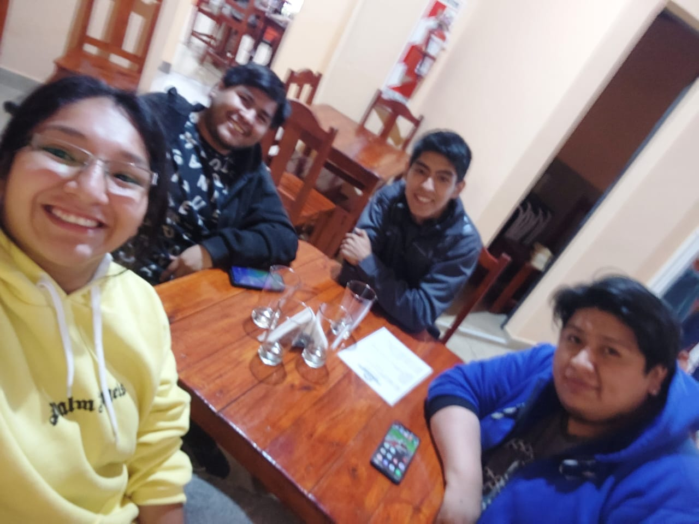

¿Quiénes Somos?
En Reparación de PC, somos un equipo de técnicos especializados con más de una década de experiencia en el diagnóstico, reparación y mantenimiento de equipos informáticos. Nuestro compromiso es brindar soluciones rápidas, efectivas y de alta calidad a todos nuestros clientes.
Nuestra Historia
Fundada en 2014, nuestra empresa comenzó como un pequeño taller enfocado en reparar problemas básicos de computadoras. A lo largo de los años, hemos evolucionado para convertirnos en un referente en la industria, ofreciendo servicios integrales que abarcan desde la reparación de hardware hasta la optimización de software y actualizaciones de componentes.
Misión y Visión

Misión
Proporcionar servicios de reparación y mantenimiento de equipos informáticos con un enfoque en la calidad, rapidez y satisfacción del cliente.
Visión
Convertirnos en líderes regionales en soluciones tecnológicas, siendo reconocidos por nuestra innovación y excelencia en el servicio.
Impacto en la Comunidad
En Reparación de PC, estamos profundamente comprometidos con nuestra comunidad local en Perico, Jujuy. Trabajamos de la mano con escuelas, pequeñas empresas y organizaciones sin fines de lucro para ofrecer soporte técnico y capacitación en tecnología.
- Escuelas locales: Mantenimiento de computadoras para aulas digitales, mejorando la experiencia educativa de los estudiantes.
- Empresas: Implementación de sistemas y soporte técnico continuo para mejorar la productividad de pequeños negocios.
- Capacitación: Talleres gratuitos para jóvenes interesados en tecnología, fomentando el desarrollo de habilidades en informática.
Además, promovemos el reciclaje tecnológico, ayudando a reducir la cantidad de residuos electrónicos mediante la reutilización de componentes funcionales. Esto no solo reduce el impacto ambiental, sino que también apoya a la comunidad con equipos más accesibles.
Valores
- Compromiso: Cumplimos con los tiempos y estándares establecidos para garantizar resultados óptimos.
- Innovación: Nos mantenemos actualizados con las últimas tecnologías y herramientas del mercado.
- Confianza: Establecemos relaciones sólidas y transparentes con nuestros clientes.
Nuestro Equipo Técnico
Contamos con un equipo multidisciplinario compuesto por especialistas en hardware, software y optimización de sistemas. Cada miembro está altamente capacitado y en constante formación, asegurando que podamos abordar cualquier problema técnico de manera eficiente.

Servicios Detallados
| Servicio | Descripción | Precio Estimado |
|---|---|---|
| Reparación | ProblemaS del equipo. | $35000 |
| Mantenimiento | Instalación y limpieza. | $25000 |
| Actualización | Hardware moderno. | $40000 |